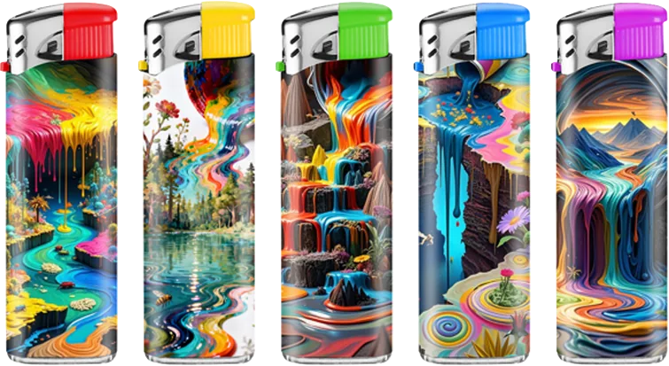
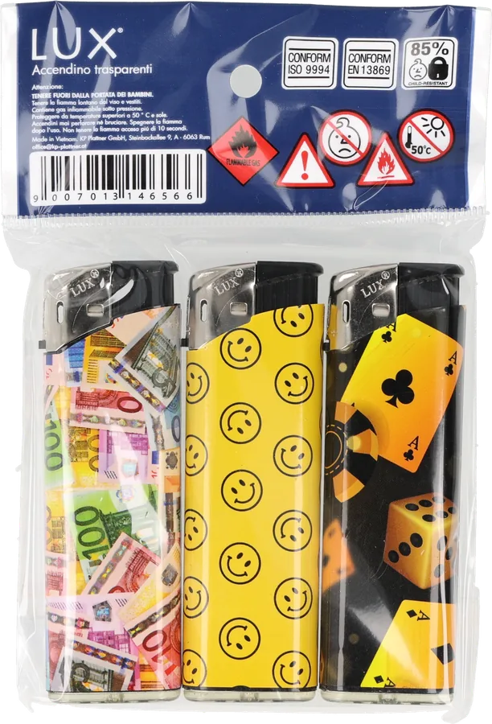
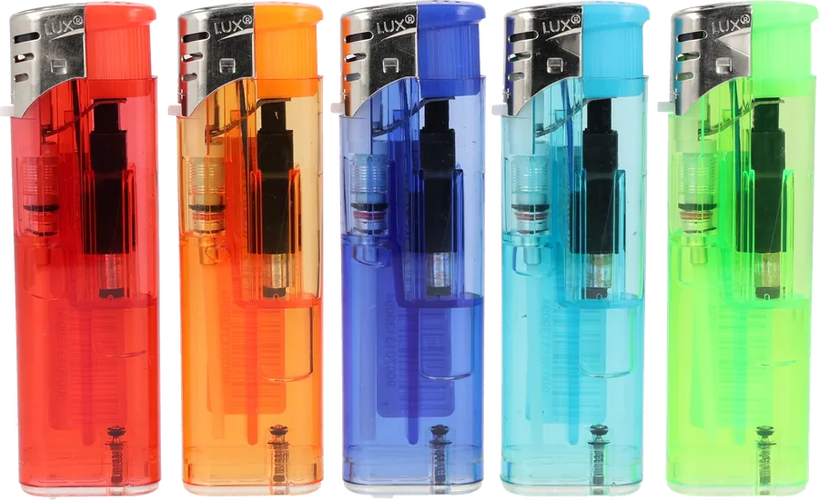
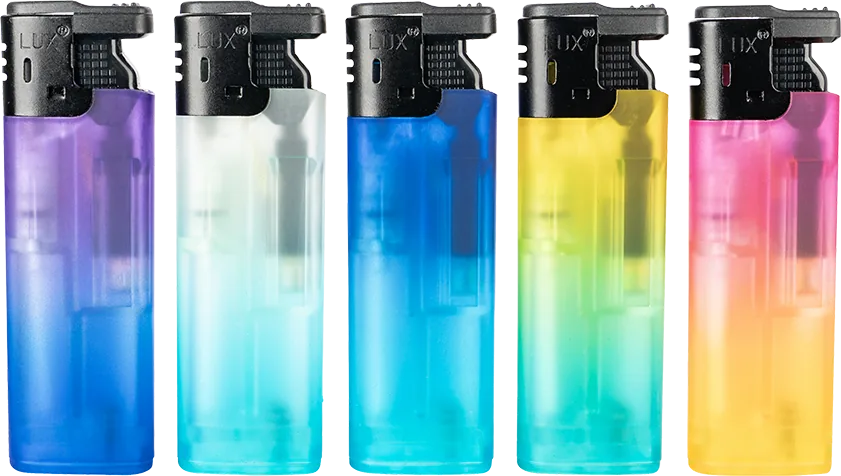
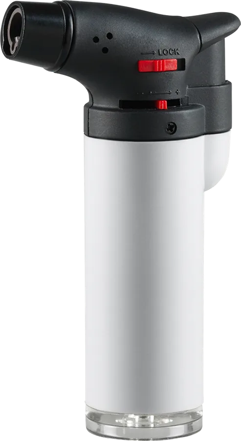
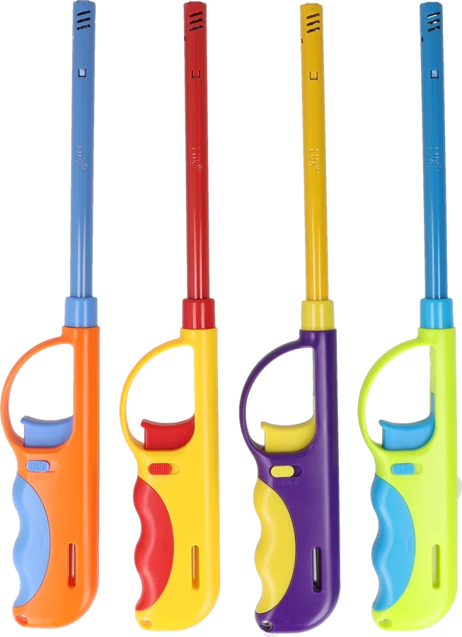
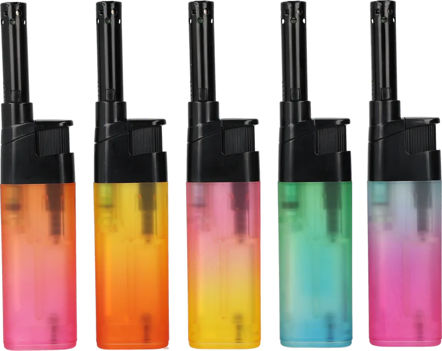
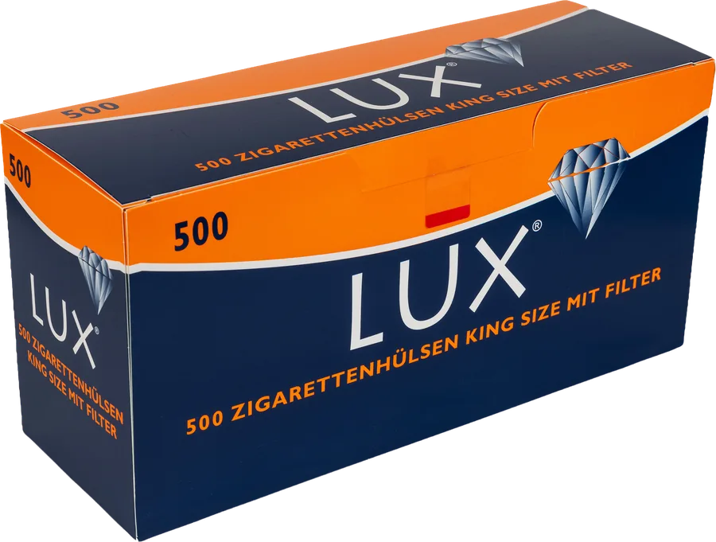
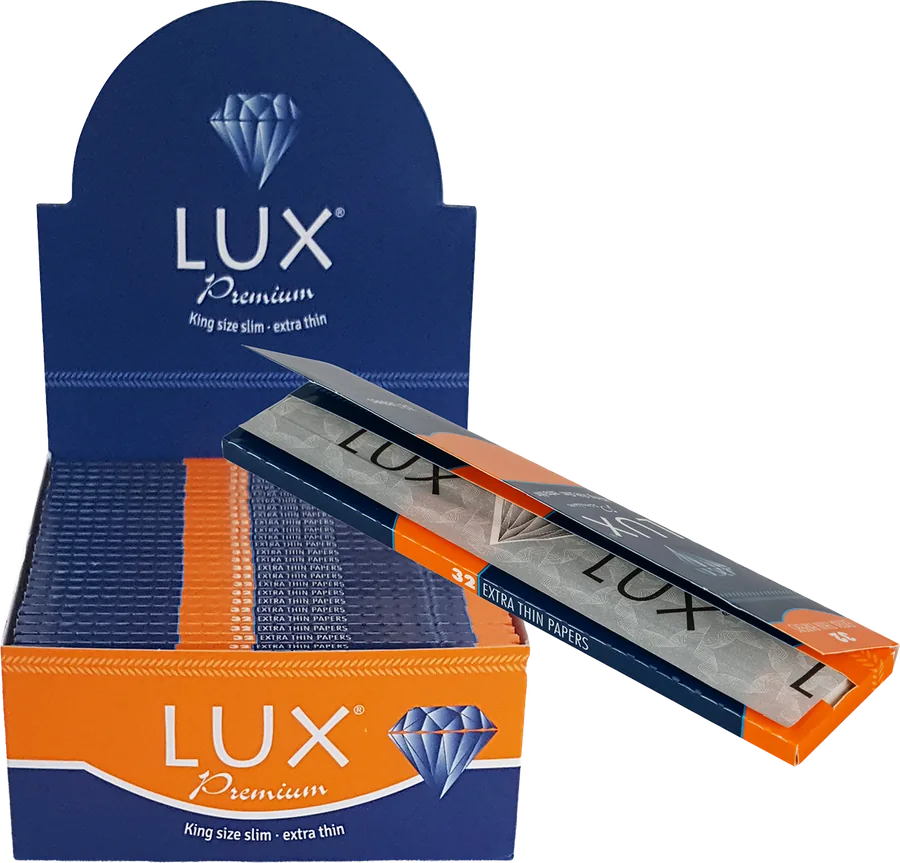
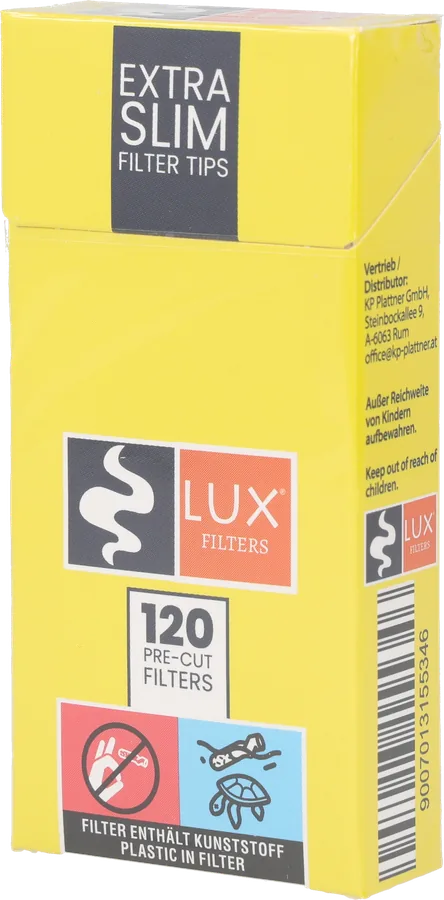

<title>LUX® Onepager</title>
<link rel="icon" type="image/png" href="favicon.png">
<link rel="apple-touch-icon" href="favicon.png">
<meta name="claude:viewport-fit-sides" content="cover">
<link rel="preconnect" href="https://fonts.googleapis.com">
<link rel="preconnect" href="https://fonts.gstatic.com" crossorigin>
<link rel="stylesheet" href="https://fonts.googleapis.com/css2?family=Josefin+Sans:wght@200;300;400&family=Lora:wght@400;500&family=Mulish:wght@400;600;700&display=swap">
<style>
/* Layout: dunkle Packungsfläche, orange Wellenlinien als Leitmotiv, linksbündige Textspalten mit großzügigem Weißraum */
:root {
  --navy: #10223F;        /* Packungs-Navy (aus Vorschau angenähert) */
  --navy-deep: #0B1830;
  --navy-line: #22365A;
  --orange: #F2672A;      /* Packungs-Orange (aus Vorschau angenähert) */
  --white: #FFFFFF;
  --mist: #B8C2D6;
  --paper: #F4F6FA;
  --paper-2: #DCE2EC;
  --f-display: "Josefin Sans", "Futura", "Century Gothic", sans-serif;
  --f-serif: "Lora", Georgia, "Times New Roman", serif;
  --f-body: "Mulish", "Segoe UI", system-ui, sans-serif;
  color-scheme: dark;
}
* { box-sizing: border-box; }
html { scroll-behavior: smooth; }
@media (prefers-reduced-motion: reduce) { html { scroll-behavior: auto; } }
body {
  background: var(--navy);
  color: var(--white);
  font-family: var(--f-body);
  font-size: 1.0625rem;
  line-height: 1.65;
  -webkit-font-smoothing: antialiased;
}
.wrap {
  max-width: 1120px;
  margin: 0 auto;
  padding-left: max(24px, env(safe-area-inset-left, 0px));
  padding-right: max(24px, env(safe-area-inset-right, 0px));
}
h1, h2, h3 { text-wrap: balance; margin: 0; }
p { margin: 0; }
.eyebrow {
  font-family: var(--f-serif);
  text-transform: uppercase;
  letter-spacing: .14em;
  font-size: .8125rem;
  color: var(--mist);
}
a { color: inherit; }
a:focus-visible, .btn:focus-visible { outline: 2px solid var(--orange); outline-offset: 4px; }

/* Kopfzeile */
.top {
  position: sticky; top: env(safe-area-inset-top, 0px); z-index: 10;
  background: color-mix(in srgb, var(--navy) 88%, transparent);
  backdrop-filter: blur(8px);
  border-bottom: 1px solid var(--navy-line);
}
.top .wrap { display: flex; align-items: center; justify-content: space-between; padding-block: 16px; }
.top .logo { width: 64px; color: var(--orange); display: block; }
.top nav { display: flex; gap: 28px; font-size: .875rem; letter-spacing: .08em; text-transform: uppercase; }
.top nav a { text-decoration: none; color: var(--mist); }
.top nav a:hover { color: var(--white); }

/* Hero */
.hero { position: relative; overflow: hidden; }
.hero .wrap { position: relative; z-index: 1; padding-block: clamp(64px, 11vw, 132px) clamp(180px, 22vw, 280px); display: grid; gap: 28px; }
.hero .logo { width: min(440px, 78vw); color: var(--orange); }
.hero .sub { font-family: var(--f-serif); text-transform: uppercase; letter-spacing: .12em; font-size: clamp(.9rem, 1.6vw, 1.05rem); color: var(--white); }
.hero p.lead { max-width: 34em; font-size: clamp(1.0625rem, 1.8vw, 1.25rem); color: var(--white); }
.btn {
  justify-self: start;
  display: inline-flex; align-items: center; gap: 12px;
  background: var(--orange); color: var(--navy-deep);
  font-family: var(--f-body); font-weight: 700; font-size: .9375rem; letter-spacing: .04em;
  text-decoration: none; padding: 15px 26px; border-radius: 999px;
  transition: transform .2s ease, background .2s ease;
}
.btn:hover { transform: translateY(-2px); background: #FF7A3F; }
.btn svg { width: 16px; height: 16px; }
canvas.waves { position: absolute; left: 0; right: 0; bottom: 0; width: 100%; height: 62%; display: block; pointer-events: none; }

/* Sektionen */
section.block .wrap { padding-block: clamp(72px, 10vw, 120px); }
.intro .wrap { display: grid; grid-template-columns: minmax(0, 5fr) minmax(0, 6fr); gap: clamp(32px, 6vw, 88px); align-items: start; }
.intro h2, .range h2, .closing h2 {
  font-family: var(--f-display); font-weight: 300; font-size: clamp(2rem, 4.4vw, 3.25rem); line-height: 1.1; letter-spacing: .01em;
}
.intro h2 em { font-style: normal; color: var(--orange); }
.intro .text { display: grid; gap: 20px; color: var(--mist); max-width: 36em; }
.intro .text p:first-child { color: var(--white); }

.range { background: var(--navy-deep); border-block: 1px solid var(--navy-line); }
.range header { display: grid; gap: 14px; margin-bottom: clamp(40px, 6vw, 64px); }
.grid4 { display: grid; grid-template-columns: repeat(2, minmax(0, 1fr)); border-top: 1px solid var(--navy-line); }
.cat { padding: 36px 40px 40px 0; border-bottom: 1px solid var(--navy-line); display: grid; gap: 14px; align-content: start; min-width: 0; }
.cat:nth-child(2n) { padding: 36px 0 40px 40px; border-left: 1px solid var(--navy-line); }
.shots {
  background: radial-gradient(120% 90% at 50% 100%, var(--paper) 0%, var(--paper-2) 100%);
  border-radius: 6px; aspect-ratio: 16 / 10; max-width: 100%;
  display: flex; align-items: flex-end; justify-content: center; gap: 4%;
  padding: 7% 6% 6%; margin-bottom: 12px; overflow: hidden;
}
.shots img { flex: 1 1 0; width: 0; min-width: 0; height: 100%; object-fit: contain; object-position: center bottom; filter: drop-shadow(0 10px 14px rgba(11,24,48,.22)); transition: transform .35s ease; }
.cat:hover .shots img { transform: translateY(-4px); }
@media (prefers-reduced-motion: reduce) { .shots img, .btn { transition: none; } }
.cat h3 { font-family: var(--f-display); font-weight: 400; font-size: clamp(1.4rem, 2.4vw, 1.75rem); line-height: 1.2; color: var(--white); }
.cat .tag { font-family: var(--f-serif); text-transform: uppercase; letter-spacing: .14em; font-size: .75rem; color: var(--orange); }
.cat p { color: var(--mist); max-width: 32em; }

.manifest .wrap { display: grid; gap: 28px; }
.manifest .words { display: grid; gap: 4px; }
.manifest .words span {
  font-family: var(--f-display); font-weight: 200; font-size: clamp(2.6rem, 8.5vw, 6.5rem); line-height: 1; letter-spacing: -.01em;
}
.manifest .words span:nth-child(2) { color: var(--orange); padding-left: clamp(0px, 8vw, 120px); }
.manifest .words span:nth-child(3) { padding-left: clamp(0px, 16vw, 240px); }
.manifest p { max-width: 36em; color: var(--mist); font-size: 1.125rem; }

.closing { position: relative; overflow: hidden; }
.closing .wrap { position: relative; z-index: 1; padding-block: clamp(72px, 10vw, 120px) clamp(200px, 24vw, 300px); display: grid; gap: 22px; }
.closing p { max-width: 34em; color: var(--mist); font-size: 1.125rem; }
.closing canvas.waves { height: 70%; }

footer { background: var(--navy-deep); border-top: 1px solid var(--navy-line); font-size: .9375rem; color: var(--mist); }
footer .wrap { padding-block: 40px; display: flex; flex-wrap: wrap; gap: 24px 48px; justify-content: space-between; align-items: end; }
footer .logo { width: 72px; color: var(--white); margin-bottom: 14px; }
footer address { font-style: normal; line-height: 1.6; }
footer strong { color: var(--white); font-weight: 600; }
footer .copy { font-size: .8125rem; }
footer .legal { display: grid; gap: 10px; justify-items: end; }
footer .legal nav { display: flex; gap: 24px; font-size: .875rem; }
footer .legal a { color: var(--white); text-decoration: none; border-bottom: 1px solid var(--navy-line); padding-bottom: 2px; }
footer .legal a:hover { border-color: var(--orange); }
@media (max-width: 760px) { footer .legal { justify-items: start; } }

@media (max-width: 760px) {
  .top nav { display: none; }
  .intro .wrap { grid-template-columns: minmax(0, 1fr); }
  .grid4 { grid-template-columns: minmax(0, 1fr); }
  .cat, .cat:nth-child(2n) { padding: 30px 0 32px; border-left: 0; }
}
</style>

<svg width="0" height="0" style="position:absolute" aria-hidden="true">
  <symbol id="lux" viewBox="0 0 107.761 37.963">
    <path fill="currentColor" d="M 58.246094 0.0234375 L 53.363281 0.0234375 C 53.273438 0.0351562 53.28125 0.140625 53.285156 0.25 C 53.558594 7.121094 53.988281 15.34375 53.136719 21.96875 C 52.296875 28.496094 49.375 33.652344 42.464844 33.84375 C 27.6875 34.253906 30.757812 14.949219 30.816406 0.851562 L 25.929688 0.851562 C 26.09375 9.890625 25.359375 19.351562 27.058594 26.480469 C 28.734375 33.542969 33.492188 38.257812 42.464844 37.828125 C 50.722656 37.429688 55.269531 32.496094 57.042969 25.652344 C 58.890625 18.523438 58.046875 9.152344 58.246094 0.0234375"/>
    <path fill="currentColor" d="M 97.78125 5.585938 C 98.109375 5.253906 99.523438 4.160156 99.507812 3.855469 C 99.496094 3.582031 98.128906 2.554688 97.78125 2.203125 C 96.96875 1.394531 96.535156 0.785156 95.898438 0.398438 C 91.84375 5.410156 87.699219 10.335938 83.425781 15.128906 C 79.585938 10.25 75.605469 5.511719 71.925781 0.472656 C 70.585938 1.589844 69.285156 2.746094 68.09375 4.007812 C 72.214844 8.75 76.308594 13.527344 80.34375 18.363281 C 75.6875 23.75 71.066406 29.179688 66.363281 34.519531 C 67.511719 35.628906 68.472656 36.917969 69.746094 37.902344 C 74.125 32.335938 78.480469 26.746094 83.046875 21.367188 C 87.527344 26.835938 92.035156 32.269531 96.425781 37.828125 C 97.617188 36.589844 99 35.539062 100.109375 34.21875 C 95.546875 28.761719 90.726562 23.5625 86.128906 18.136719 C 89.632812 14.125 93.84375 9.519531 97.78125 5.585938"/>
    <path fill="currentColor" d="M 5.5625 0.550781 L 0.300781 0.550781 C 0.214844 0.5625 0.21875 0.667969 0.226562 0.773438 C 0.421875 12.585938 0.785156 25.550781 0 37 C 5.894531 37.117188 11.660156 37.363281 17.511719 37.527344 L 17.511719 33.015625 C 13.507812 33.222656 9.257812 33.179688 5.109375 33.242188 C 5.171875 22.253906 4.910156 10.945312 5.5625 0.550781"/>
    <path fill="currentColor" d="M 102.4375 2.351562 C 102.566406 1.621094 103.257812 0.851562 104.242188 0.625 C 105.464844 0.339844 106.890625 1.277344 107.023438 2.578125 C 107.367188 5.988281 101.804688 5.988281 102.4375 2.351562 M 104.167969 0.175781 C 102.996094 0.402344 102.34375 1.234375 102.140625 1.75 C 101.5 3.390625 102.410156 4.691406 103.039062 5.132812 C 105.042969 6.542969 107.933594 4.863281 107.472656 2.277344 C 107.25 1.027344 105.863281 -0.15625 104.167969 0.175781"/>
    <path fill="currentColor" d="M 104.019531 2.730469 L 104.019531 1.828125 C 104.640625 1.832031 105.386719 1.710938 105.296875 2.429688 C 105.070312 2.730469 104.527344 2.710938 104.019531 2.730469 M 105.671875 1.675781 C 105.199219 1.320312 104.324219 1.371094 103.492188 1.375 L 103.492188 4.382812 L 104.019531 4.382812 C 104.066406 3.980469 103.917969 3.382812 104.09375 3.105469 C 105.242188 3.007812 104.792969 4.511719 105.972656 4.382812 C 105.765625 3.835938 105.417969 3.433594 105.070312 3.03125 C 105.726562 3.015625 105.988281 2.21875 105.671875 1.675781"/>
  </symbol>
</svg>

<header class="top">
  <div class="wrap">
    <a href="#start" aria-label="LUX® – zum Seitenanfang"><svg class="logo" viewBox="0 0 107.761 37.963" role="img" aria-label="LUX®"><use href="#lux"/></svg></a>
    <nav aria-label="Seitennavigation">
      <a href="#marke">Marke</a>
      <a href="#sortiment">Sortiment</a>
      <a href="#kontakt">Kontakt</a>
    </nav>
  </div>
</header>

<main id="start">
  <section class="hero">
    <div class="wrap">
      <h1><svg class="logo" viewBox="0 0 107.761 37.963" role="img" aria-label="LUX®"><use href="#lux"/></svg></h1>
      <p class="sub">Feuerzeuge &amp; Zubehör</p>
      <p class="lead">LUX® verbindet zuverlässige Funktion mit einem unverwechselbaren Look. Von auffälligen Motivfeuerzeugen über praktische Piezo- und Jet-Flame-Modelle bis hin zu BBQ-Feuerzeugen und Zubehör: LUX® bringt Abwechslung in den Alltag.</p>
      <a class="btn" href="#sortiment">LUX® Produkte entdecken
        <svg viewBox="0 0 16 16" fill="none" stroke="currentColor" stroke-width="2" aria-hidden="true"><path d="M8 2v12M3 9l5 5 5-5"/></svg>
      </a>
    </div>
    <canvas class="waves" data-seed="1" aria-hidden="true"></canvas>
  </section>

  <section class="block intro" id="marke">
    <div class="wrap">
      <h2>So individuell <em>wie der Moment.</em></h2>
      <div class="text">
        <p>LUX® steht für Produkte, die Funktion und Gestaltung miteinander verbinden. Die Marke setzt bewusst auf Abwechslung: kräftige Farben, unterschiedliche Motive, moderne Formen und Lösungen für verschiedenste Einsatzbereiche.</p>
        <p>Ob klassisches Alltagsfeuerzeug, auffälliges Motivmodell oder praktisches BBQ-Feuerzeug – LUX® richtet sich an alle, die bei funktionalen Produkten auch Wert auf Design und Persönlichkeit legen.</p>
      </div>
    </div>
  </section>

  <section class="block range" id="sortiment">
    <div class="wrap">
      <header>
        <p class="eyebrow">Sortiment</p>
        <h2>LUX® in seiner ganzen Vielfalt</h2>
      </header>
      <div class="grid4">
        <article class="cat">
          <div class="shots"></div>
          <p class="tag">Design</p>
          <h3>Motiv- &amp; Designfeuerzeuge</h3>
          <p>Von Smileys über grafische Designs bis zu wechselnden Motivserien: Die LUX® Designmodelle machen aus einem Alltagsprodukt ein Produkt mit Wiedererkennungswert. Im aktuellen Sortiment finden sich beispielsweise Serien wie LUX Smiley, Biene und Wildnis.</p>
        </article>
        <article class="cat">
          <div class="shots"></div>
          <p class="tag">Technik</p>
          <h3>Piezo &amp; Jet-Flame</h3>
          <p>Zuverlässige Zündung trifft auf moderne Technik. LUX® bietet unterschiedliche Feuerzeugtypen für den täglichen Einsatz – vom klassischen Piezo-Modell bis zur konzentrierten Jet-Flame.</p>
        </article>
        <article class="cat">
          <div class="shots"></div>
          <p class="tag">Reichweite</p>
          <h3>BBQ, Candle Lite &amp; Stabfeuerzeuge</h3>
          <p>Mehr Reichweite für Grill, Kerzen und Haushalt: LUX® bietet unterschiedliche Stab- und BBQ-Feuerzeuge. Im aktuellen Sortiment finden sich unter anderem BBQ Slim, Tele und BBQ Meto sowie verschiedene Candle-Lite-Modelle.</p>
        </article>
        <article class="cat">
          <div class="shots"></div>
          <p class="tag">Zubehör</p>
          <h3>Hülsen &amp; Papers</h3>
          <p>Auch im Bereich rund ums Selberdrehen und Stopfen ist LUX® vertreten. Aktuell werden beispielsweise LUX Hülsen in unterschiedlichen Packungsgrößen angeboten.</p>
        </article>
      </div>
    </div>
  </section>

  <section class="block manifest">
    <div class="wrap">
      <p class="eyebrow">LUX® ist …</p>
      <h2 class="words"><span>Ausdrucksstark.</span><span>Vielseitig.</span><span>Unkompliziert.</span></h2>
      <p>LUX® verbindet praktische Produkte mit einer eigenständigen Designsprache. Unterschiedliche Farben, Motive und Produktformen sorgen dafür, dass die Marke immer wieder neu entdeckt werden kann – ohne ihre klare Identität zu verlieren.</p>
    </div>
  </section>

  <section class="closing">
    <div class="wrap">
      <h2>Entdecke die Welt von LUX®.</h2>
      <p>Von farbenfrohen Klassikern bis zu funktionalen Spezialfeuerzeugen: LUX® bietet eine vielseitige Auswahl rund um Feuer und Zubehör.</p>
    </div>
    <canvas class="waves" data-seed="2" aria-hidden="true"></canvas>
  </section>
</main>

<footer id="kontakt">
  <div class="wrap">
    <div>
      <svg class="logo" viewBox="0 0 107.761 37.963" role="img" aria-label="LUX®"><use href="#lux"/></svg>
      <address><strong>Vertrieb / Distributor</strong><br>KP Plattner GmbH<br>Steinbockallee 9, A-6063 Rum<br>office@kp-plattner.at</address>
    </div>
    <div class="legal">
      <nav aria-label="Rechtliches"><a href="impressum.html">Impressum</a><a href="datenschutz.html">Datenschutz</a></nav>
      <p class="copy">© LUX® · KP Plattner GmbH</p>
    </div>
  </div>
</footer>

<script>
(function () {
  var reduce = window.matchMedia && matchMedia('(prefers-reduced-motion: reduce)').matches;
  var canvases = Array.prototype.slice.call(document.querySelectorAll('canvas.waves'));
  var ORANGE = getComputedStyle(document.documentElement).getPropertyValue('--orange').trim() || '#F2672A';

  // zwei Leitkurven je Canvas; die Linien werden dazwischen interpoliert (wie das Packungsmotiv)
  function curve(x, w, h, s, t, k) {
    var u = x / w;
    return h * (0.5
      + 0.22 * Math.sin(u * (2.1 + s) * Math.PI + t * 0.6 + k * 1.7)
      + 0.12 * Math.sin(u * (4.3 - s) * Math.PI - t * 0.4 + k * 2.9)
      + 0.06 * Math.sin(u * 9.0 * Math.PI + t * 0.3 + k));
  }
  function draw(c, t) {
    var dpr = Math.min(window.devicePixelRatio || 1, 2);
    var w = c.clientWidth, h = c.clientHeight;
    if (!w || !h) return;
    if (c.width !== Math.round(w * dpr) || c.height !== Math.round(h * dpr)) { c.width = Math.round(w * dpr); c.height = Math.round(h * dpr); }
    var g = c.getContext('2d');
    g.setTransform(dpr, 0, 0, dpr, 0, 0);
    g.clearRect(0, 0, w, h);
    var s = Number(c.dataset.seed) * 0.35;
    var n = w < 600 ? 26 : 40, step = 6;
    g.strokeStyle = ORANGE;
    for (var i = 0; i < n; i++) {
      var f = i / (n - 1);
      g.globalAlpha = 0.35 + 0.65 * Math.sin(f * Math.PI);
      g.lineWidth = 1;
      g.beginPath();
      for (var x = 0; x <= w + step; x += step) {
        var a = curve(x, w, h, s, t, 0), b = curve(x, w, h, s, t, 1);
        var y = a + (b - a) * f + (f - 0.5) * h * 0.18 * Math.sin((x / w) * Math.PI);
        if (x === 0) g.moveTo(x, y); else g.lineTo(x, y);
      }
      g.stroke();
    }
    g.globalAlpha = 1;
  }
  function frame(ms) {
    var t = ms / 1000 * 0.25;
    canvases.forEach(function (c) { draw(c, t); });
    if (!reduce) requestAnimationFrame(frame);
  }
  frame(0);
  if (!reduce) requestAnimationFrame(frame);
  window.addEventListener('resize', function () { if (reduce) frame(0); });
})();
</script>
